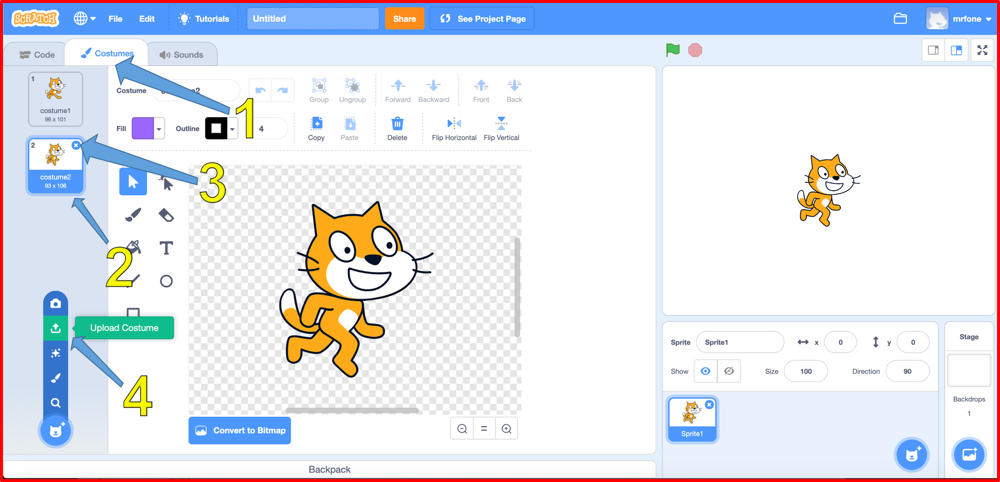

A Virtual LOLcat in Scratch
Table of Contents
Grey overlay
Pink
Green
Blue
Cream
Liliac
Purple
Yellow
1 Objectives
Developing Programming and Development, Algorithms, Literacy, Information Technology Learning Strands:
- Understanding of what a virtual pet is.
- Understand what a sprite is and how to add new sprites.
- Understanding of basic keyboard interrupt events.
- Understanding of arithmetic operators and loops.
- Understanding of basic display coordinates.
- Use correct grammar, punctuation and spelling of keywords throughout this project.
- Use a variety of software to manipulate and present digital content.
2 Virtual Pets
Learn It
- Virtual pets were very common and popular a few years ago.
- Pets such as the Tamagotchi were tiny computers with software on them that simulated a pet.
- The owner of the pet had to feed it and pet it otherwise the pet would die.
- You're going to be making your own virtual pet in Scratch.
Research It
- Use the web to find out some of the features that were common to most virtual pet games. A list has been started for you below:
- Feeding.
- Petting.
- Scolding.
3 Killing our pet
- Create a new Scratch project called Virtual-LOL-Cat.
- No matter how good a gamer you are, your character always dies in the end. So that's the first thing we'll be setting up.
Research It
- We'll need a couple of images to begin with.
- One to represent the living pet.
- One to represent the dead pet.
- Here are the ones I'll be using, but you can make your own.
- If you want to use the dead cat costume below, just right click and save it to your Year 7\Computer Science\MyLOLCat\ folder for uploading later.
Code It: Costume Change
Our first script is going to kill the pet, whenever the space bar is pressed. Killing the pet will actually just be a case of changing the sprite's costume.
- 1. Click on the Costumes Tab.
- 2. Click on the second Costume.
- 3. Delete the second costume.
- 4. Use the Upload button to add in the dead pet costume.

Code It
- Now we just need to make sure everything has a sensible name:
- 1. Name both costumes, AlivePet and DeadPet.
- 2. Name your Sprite as: Pet

Try It
We now need to write a little script to kill the pet. Look at the code below and see if you can assemble the script.
when space key is pressed say "You let me die!!!" switch to DeadPet wait 2 secs stop all
Run It
- Here is an example of how your Scracth code should look. Try running it and press the Spacebar to see if it works properly.

- The problem is that the pet stays dead.
Try It
- We need a way of resetting the script.
- Using the pseudocode below, try to code this in Scratch.
When 'Green Flag' clicked Switch to Costume "AlivePet" Goto position x:0 y:-125
- You might need to adjust the
y:coordinate, depending on the size of the sprite you are using.
Run It
- Test your script to make sure it runs.
- Your pet should die when the space key is pressed, and then reset when you click the green flag.
4 Badge It - Your Pet Death Routine
Learning strand: Programming and Development and algorithms
Badge It: Pet Animation 1
Silver - Pet Animation 1
- The current pet death is a little undramatic.
- Try to make it a little bit more interesting, try adding two or more minor changes to the pet death routine. Things you could add:
- Could you add a little bit of animation into it?
- Could you add some sound effects?
- Could you have multiple costume changes?
- After you have made the death of the cat more dramatic, upload your Scratch code screenshot and take this self assessment quiz.
- You will be awarded different badges based on your work.
Badge It: Pet Animation 2
Gold - Pet Animation 2
- You add two more major changes (e.g. detailed animations, sound)
Badge It: Pet Animation 3
Platinum - Pet Animation 3
- To get your platinum badge, you need to add multiple major changes to make the death scene more elaborate.
- For example:
- Change the stage to a grave yard.
- Add complex animation so that the cat dies gradually with facial changes.
- Sound effects.
- Speech and movement.
Upload screenshots of all of your badge tasks to bournetolearn.com